リアクション大幅強化!!新SP「ペレ」のHalf AnniversaryレジェンドSP選手スカウトは引くべき？新SP選手4名を徹底評価

2026年7月20日更新のHalf Anniversary レジェンドSP選手スカウトでは、SUPER LEGENDのペレを筆頭に、ヴィニシウス・ジュニオール、エデル・ミリトン、エデルソンの新SP選手4名が登場しました。今回の最大の注目は、初期総合力7341・最大強化16269を誇るペレが、ポリシーやポジションを問わず現環境最強クラスのSP選手として実装されたことです。さらに、新しい金フォーメーションコンボ「セレソン'70」に対応するブラジル国籍のリアクション選手が一気に追加され、リアクション編成を本気で強化したいプレイヤーにとって見逃せないガチャになっています。
結論：現環境最強CFが欲しいなら迷わず引くべき
今回のガチャは、ペレを確保できるかどうかで評価が決まります。ペレは全SP選手400人中、初期総合力1位。最大強化総合力が16000を超えた初めてのSP選手であり、リアクション初の「ラインブレーカーⅢ」、扱いやすい好調トリガー、常時発動の「孤高」、さらに中央で発動しやすい「アンストッパブルショット」まで持つ、明確な環境トップCFです。
リアクションの新金フォメコン「セレソン'70」をSP選手で発動したい場合も、ペレ・ヴィニシウス・ジュニオール・エデル・ミリトンが重要になります。特にペレはリアクション編成に限らず、純粋な性能だけで他ポリシーへ出張できるほど強いため、母体だけでも確保しておく価値が高い選手です。
一方で、ペレ以外の3名は「Half Anniv.パック SP選手BOXセット」で確定入手できます。課金できる場合は、ガチャでペレの限界突破を狙い、ヴィニシウス・ジュニオールとエデル・ミリトンをパックで補うのが効率的です。無課金なら、ペレ・ヴィニシウス・ジュニオール・エデル・ミリトンを揃えられれば理想的ですが、最優先は間違いなくペレです。
ガシャの注目ポイント
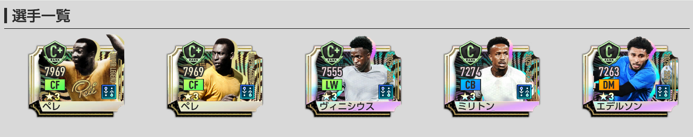
- 開催期間は2026年7月20日13時00分～2026年8月12日12時59分。
- ★3の排出率は5%。
- 排出される★3選手は2026年6月23日までに登場した選手のみ。ウスマン・デンベレまでが対象。
- RB1回限定★3確定10連はピックアップ確定ではなく、新SP4名を含む全68種の★3SP選手が同じ排出確率。
- 新SP選手がピックアップ確率で引けるのは「通常」タブのみ。
- 開催期間終了後、今回のピックアップ対象選手はSP選手スカウトに追加されない。
- 「Half Anniversary レジェンドSP選手スカウトメダル」は期間終了後、1枚につきエクストラコイン5枚へ変換。
RB1回限定★3確定10連は「ペレ確定」ではない
一番注意したいのは、RB1回限定の★3確定10連です。★3選手が1名確定する点は魅力ですが、ペレやヴィニシウス・ジュニオールなどの新SP4名が確定するガチャではありません。確定枠では、新SP4名を含む全68種の★3SP選手が同じ確率で並ぶため、ペレ1点狙いには向いていません。
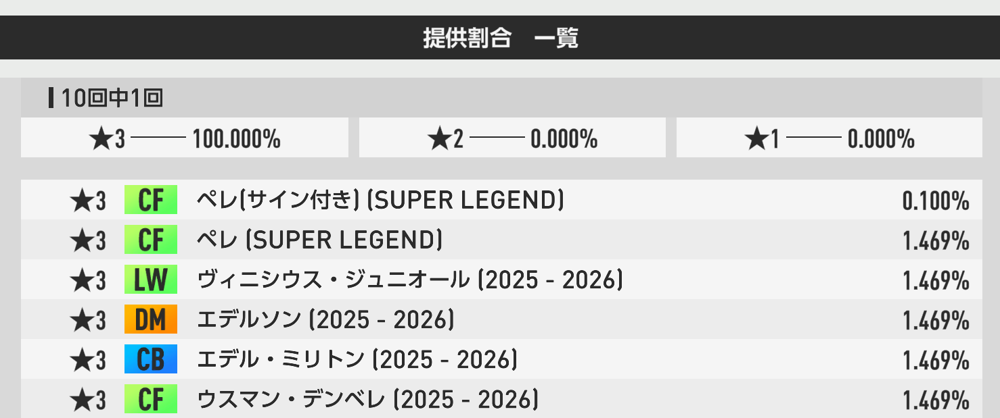
新SP4名をピックアップ確率で狙うなら、基本的には通常タブの提供割合を確認してから引くのが安全です。RB確定枠は「★3選手を1人増やしたい人向け」、通常タブは「ペレを含む新SP4名を狙いたい人向け」と考えましょう。
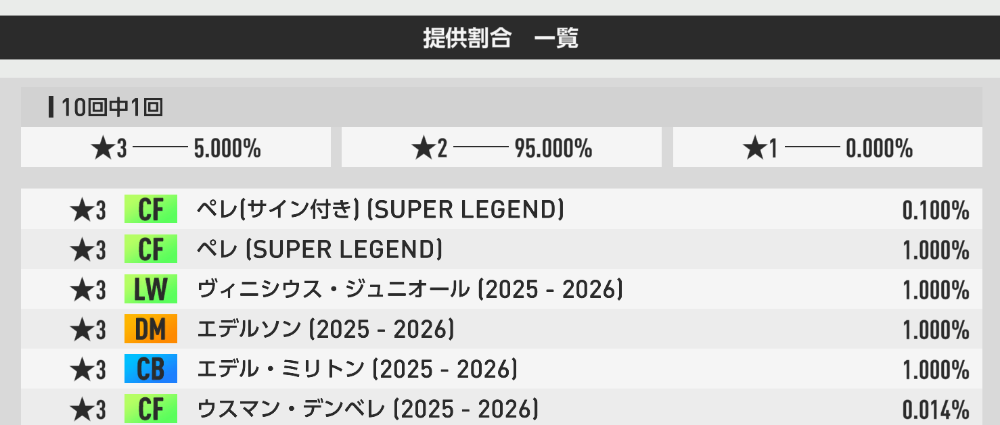
おすすめ度Tier表
現環境最強CF。初の最大総合力16000超え、リアクション初のラインブレーカーⅢ、2つの金フォメコン対応を持つ別格の大本命。
LW・サイドアタッカーⅢで総合力トップ。初心者でも扱いやすいスキルとアビリティを持ち、「セレソン'70」の重要キー。
リアクション初のスプリントCB。セレソン'70をSP選手で発動するなら重要度が高く、希少なプレースタイルも魅力。
ブラジル国籍統一では強いが、恒常SPや★2SPで役割を代用しやすい。4名の中では優先度が最も低い。
新SP選手4名の性能評価
P0396 / SUPER LEGEND
ペレ
基本情報
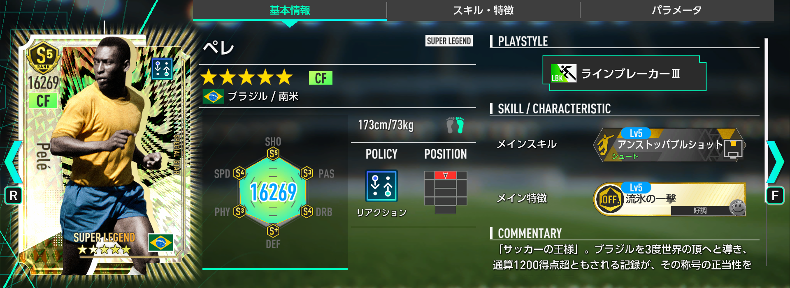
ステータス
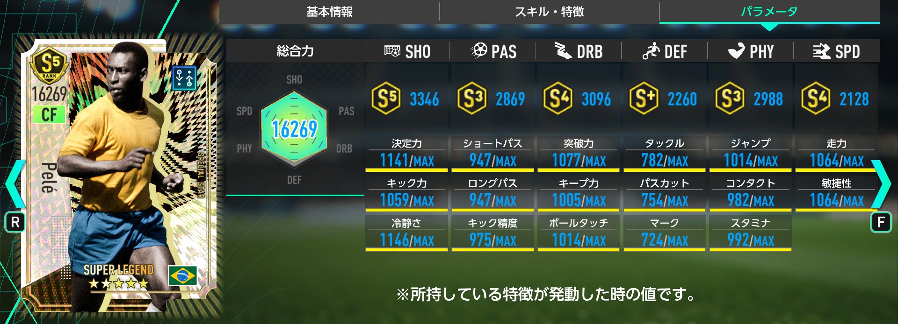
スキル・特徴
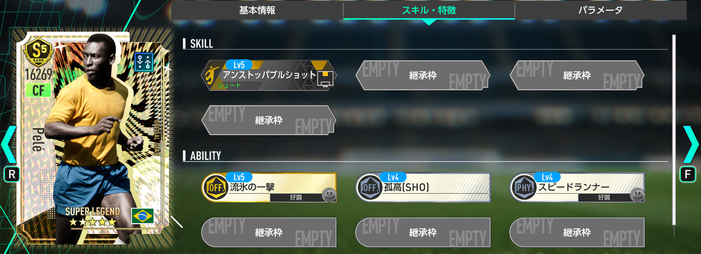
ペレは、初期総合力が全SP選手400人中1位、リアクション95人中1位、CF77人中1位、ラインブレーカー32人中1位。さらに最大強化総合力16269は、SP選手として初めて16000を突破した歴代最高クラスの数値です。
最大の価値は、単に総合力が高いだけではありません。リアクション初の「ラインブレーカーⅢ」、金フォメコン「アルヴィネグロ・プライアーノ'11」と「セレソン'70」の両方に対応し、好調トリガー2つと常時発動の「孤高」を持つため、試合中の安定感も抜群です。所持スキル「アンストッパブルショット」は期間限定SPのリオネル・メッシに続く2人目ですが、中央で発動するためCFのペレの方が扱いやすい場面も多いでしょう。
現時点の最強CF候補だったクリスティアーノ・ロナウドを超える唯一無二の存在で、リアクションを使っていないプレイヤーでも母体だけは確保しておきたい性能です。注意点は、3TOPフォーメーションコンボの中にはCFのプレースタイル指定があること。発動条件次第ではペレを起用できない場面もあるため、フォメコンとの相性は事前に確認しましょう。
P0397
ヴィニシウス・ジュニオール
基本情報
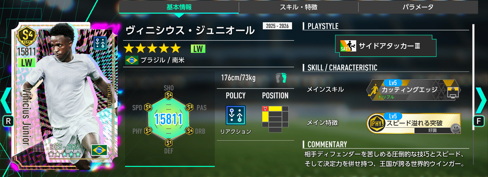
ステータス
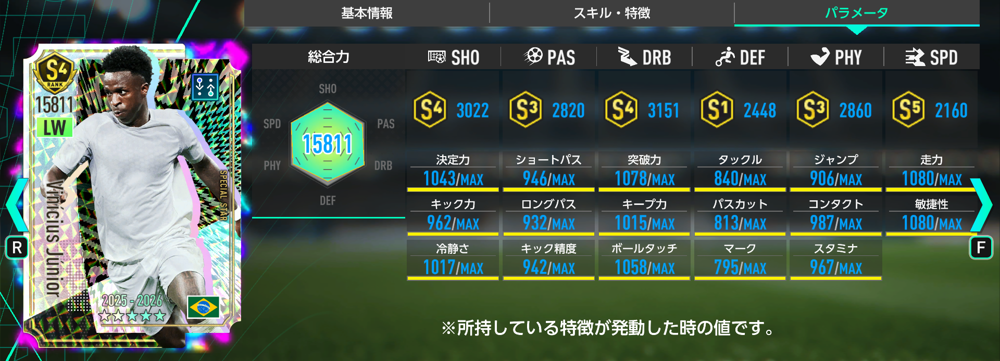
スキル・特徴
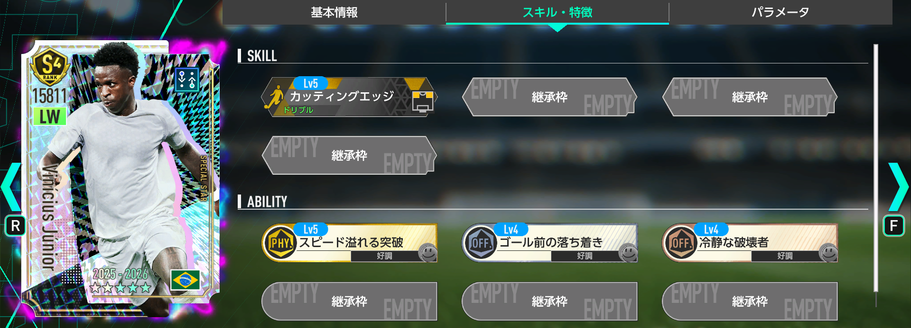
初期総合力は全SP選手400人中4位、リアクション95人中2位、LW27人中1位、サイドアタッカー25人中1位。リアクションLWのサイドアタッカーⅢとしては、恒常SP「クヴィチャ・クヴァラツヘリア」に続く2人目です。
役割だけならクヴァラツヘリアで代用できますが、ヴィニシウスは金スキル「カッティングエッジ」を最初から所持している点が大きな強みです。このスキルは特連カードでしか継承できないため、カード資産が少ない初心者にとっては完成度の高い即戦力。さらに3つのアビリティがすべて好調トリガーで、条件を満たしやすい点も使いやすさにつながっています。
「セレソン'70」のキー選手としても重要ですが、LWは3TOPでしか起用できません。将来的に2TOPの最強フォメコンが環境上位へ来た場合、スタメンから外れる可能性がある点は覚えておきたいです。
P0398
エデル・ミリトン
基本情報
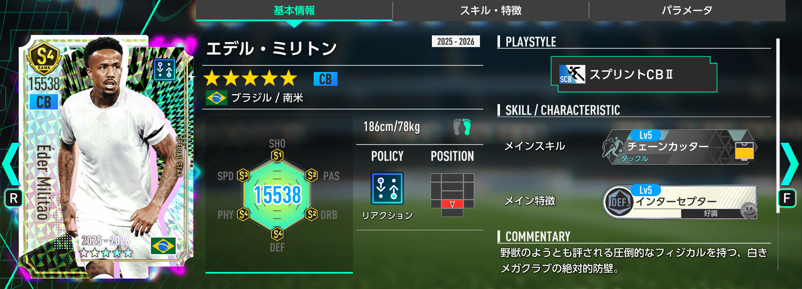
ステータス
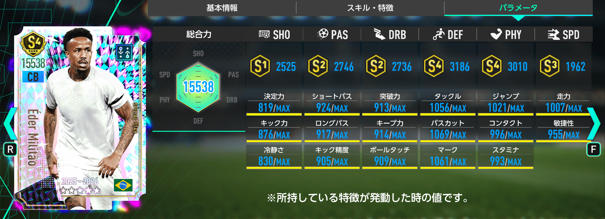
スキル・特徴
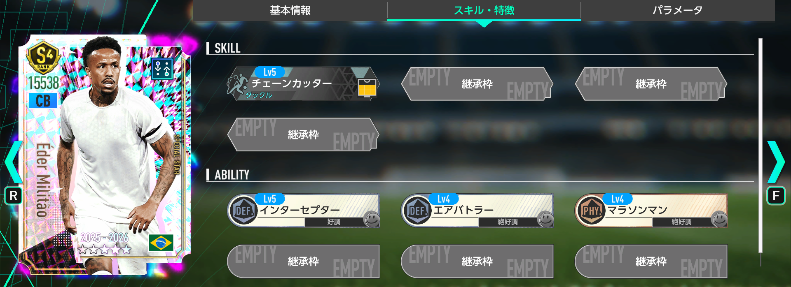
初期総合力は全SP選手400人中34位、リアクション95人中10位、CB59人中6位、スプリントCB2人中1位。プレースタイル「スプリントCB」はJリーグSP「藤井陽也」に続く2人目で、リアクションポリシーでは初実装です。
SP選手だけで金フォメコン「セレソン'70」を発動する場合は重要度が高く、リアクションCBでは現状トップクラスの総合力を誇ります。また、希少な「スプリントCBⅡ」は今後追加されるフォメコンの発動条件に対応できる可能性もあり、将来性を含めて確保価値があります。
ただし、ペレやヴィニシウス・ジュニオールと比べるとガチャでの優先度は下がります。リアクション最強編成やセレソン'70を目指さない場合は、既存CBで代用しても問題ないでしょう。
P0399
エデルソン
基本情報
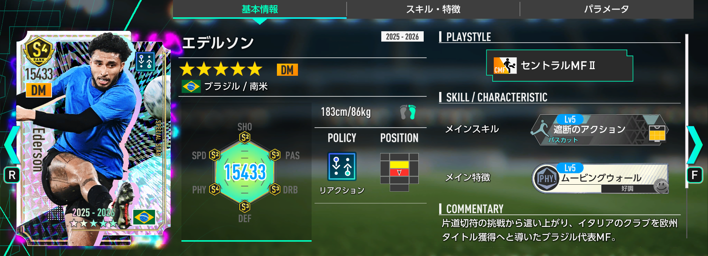
ステータス
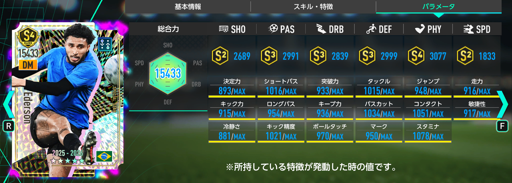
スキル・特徴
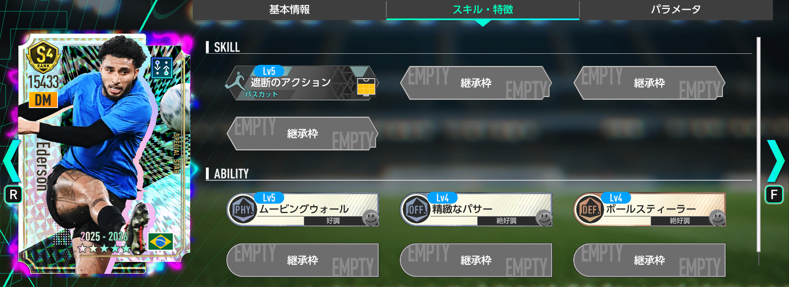
初期総合力は全SP選手400人中27位、リアクション95人中7位、DM54人中5位、セントラルMF28人中4位。リアクションDMのセントラルMFは、恒常SP「フェデリコ・バルベルデ」や「オーレリアン・チュアメニ」などを含めて7人目で、役割としての希少性は高くありません。
純粋な総合力ではフェデリコ・バルベルデが上ですが、「セレソン'70」のブラジル国籍強化を受けると、エデルソンがリアクションDMの最上位候補になります。ただし国籍による上昇効果は2%であり、バルベルデの限界突破が進んでいる場合は逆転できない可能性があります。
さらに、ブラジル国籍・リアクション・セントラルMFⅡという役割は★2SP「ドウグラス・ルイス」でも代用可能です。ブラジル国籍で最強チームを作りたい人には必要ですが、汎用性と将来性まで考えると、今回の4名では最も優先度が低い評価です。
このガチャを引くべき人・見送ってもよい人
引くべき人
- 現環境最強CFのペレを確保したい
- リアクションの最強編成を作りたい
- 「セレソン'70」をSP選手で発動したい
- ブラジル国籍の最強チームを目指している
- リセマラで長く使える軸選手が欲しい
見送ってもよい人
- リアクションやブラジル編成を使う予定がない
- CFに十分育ったクリスティアーノ・ロナウドなどがいる
- ペレ以外の3名を課金パックで確保できる
- 今後のレジェンドGK・CBにGB/RBを残したい
- 3TOPより2TOPフォメコンを中心に使っている
リセマラの理想ライン
無課金リセマラ：ペレ、ヴィニシウス・ジュニオール、エデル・ミリトンの3名を確保できれば理想。最低でもペレは確保したいです。
課金リセマラ：ガチャではペレ★4以上を狙い、ヴィニシウス・ジュニオールとエデル・ミリトンは「Half Anniv.パック SP選手BOXセット」で確保する形が効率的です。
今後のレジェンド実装を考察
ペレを止めるCB・GKが次の目玉になる可能性
ペレは攻撃性能が突出しており、現状では正面から止められるCBやGKがほとんど存在しません。これは今後のガチャで、ペレ対策となる守備側のSUPER LEGENDが実装される前触れとも考えられます。
候補として想像しやすいのは、歴代最高クラスのCBであるフランツ・ベッケンバウアーや、圧倒的な存在感を持つGKオリバー・カーンです。もちろん現時点では予想にすぎませんが、Half Anniversaryでペレを実装した以上、攻守のバランスを取るためにレジェンドCB・GKが続く展開は十分に考えられます。
ペレを狙ってGB/RBを使い切るか、それとも次の守備系レジェンドを見据えて余力を残すか。この判断も今回のガチャで重要になります。ただし、ペレ自身が期間終了後に恒常SPへ追加されない点を考えると、取り逃したくない人は母体確保を優先するのがおすすめです。
まとめ
Half Anniversary レジェンドSP選手スカウトは、現環境最強SP選手のペレが最大の目玉です。初期総合力7341、最大強化16269、リアクション初のラインブレーカーⅢ、金フォメコン2種対応、アンストッパブルショット持ちという唯一性は圧倒的で、リアクション強化を目的にしていない人でも確保を検討する価値があります。
ヴィニシウス・ジュニオールは初心者にも扱いやすい完成度の高いLW、エデル・ミリトンはセレソン'70と希少なスプリントCB目的で価値が高く、エデルソンはブラジル国籍統一で真価を発揮します。ガチャ全体としては4名すべてに役割がありますが、優先順位はペレ ＞ ヴィニシウス・ジュニオール ＞ エデル・ミリトン ＞ エデルソンです。
結論として、現環境最強CFを確保したい人、セレソン'70をSP選手で組みたい人、リセマラで長く使える軸を作りたい人は引くべきガチャです。特にペレは、今後しばらく攻撃環境の基準になる可能性が高いでしょう。